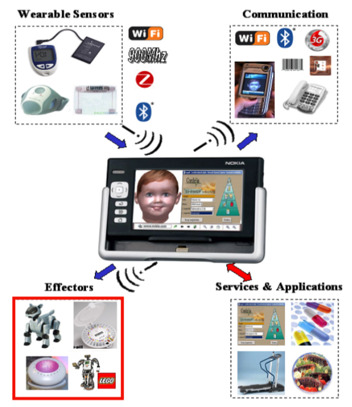
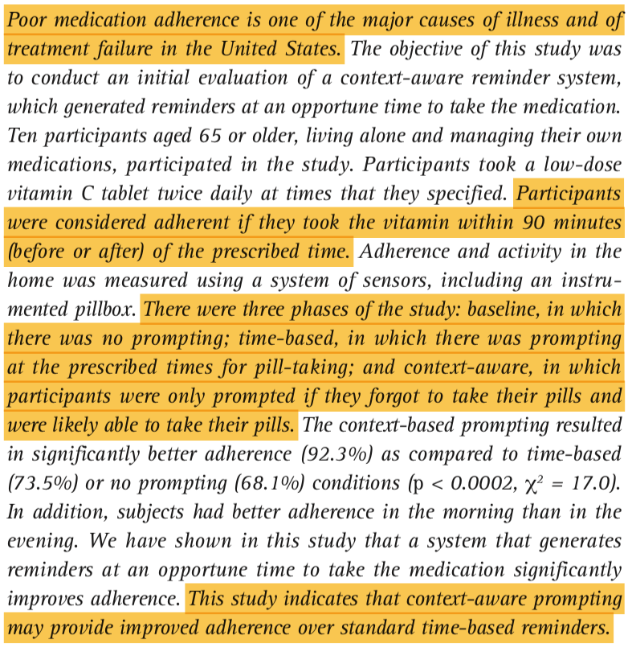
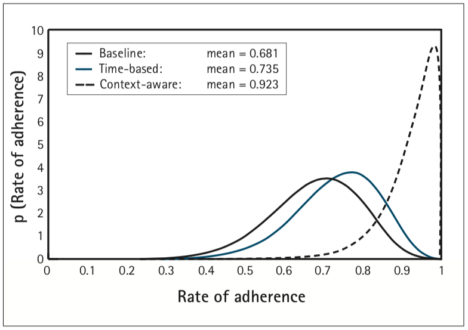
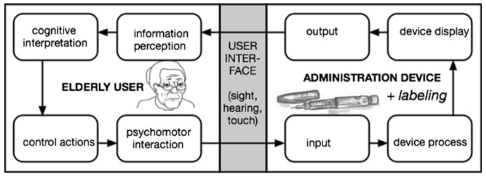
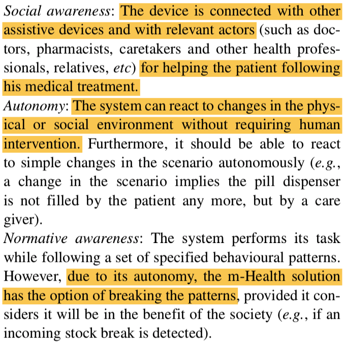
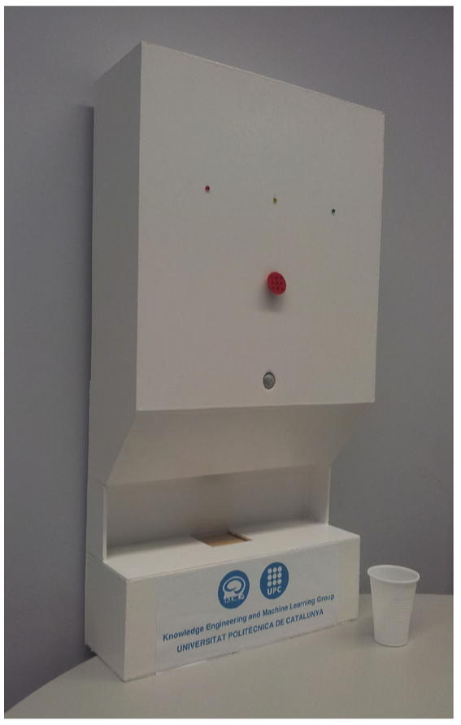
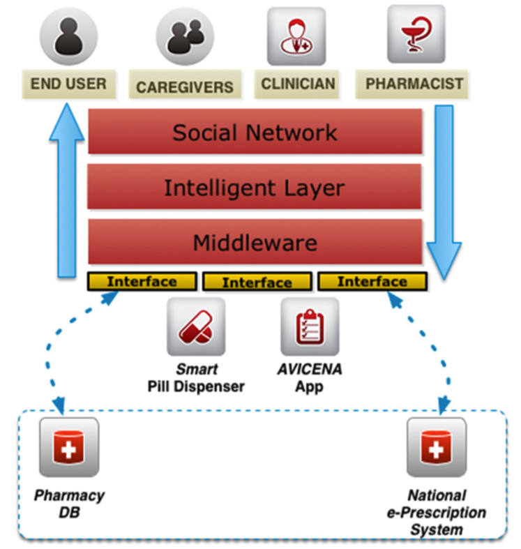

Pharmacy Robots
Devices designed to improve prescription adherence in elderly and otherwise noncompliant patients.
Home Robots (2008)
This paper outlines a robot designed to provide in-home elder care. Glance through it because it discuss some important usability considerations.
“Home Robots and Ambient Facial Interfaces: Towards Building a Novel Telehealth Platform for Drug Compliance.” Takacs et al. TTeC. 2008. [.pdf]

Big Idea: As you can see by the creepy baby face, this type of device (although unsightly) might be useful for patients with dementia since they have difficulty recognizing unfamiliar objects and text (validated by another creepy animated-face-based thesis work: [.pdf]). You might also consider incorporating their idea to activate the device with wearable sensors on the user so the product doesn’t rely on an elderly person’s ability to keep track of, for example, a swipe card.
Intelligent Reminding (2009)
Since noncompliance is a major cause of illness, treatment failure, and death in the United States, this study looks at what type of reminder is comparatively most effective. There were three reminder systems: baseline (no reminders), time-based (essentially, an alarm clock), and context-aware, which reminded users when they forgot to take their pill.
“A Study of Medication-Taking and Unobtrusive, Intelligent Reminding.” Hayes * et al. Telemedicine and e-Health.* 2009. [.pdf]

Big Idea: Context-based reminding was far more effective than time-based in terms of patient compliance, which might be an important consideration for your product. Do you want your users to trigger the device manually, do you want it to automatically dispense their prescription, or do you want some combination of the two? Which do you think is most effective?
Administration Devices (2016)
Other articles came out about the feasability of drug administration devices for the elderly before this one (example: [.pdf]), but none are as comprehensive.
“Developing Drug Administration Devices for Geriatric Use.” Sam. American Association of Pharmaceutical Scientists. 2016. [.pdf]

Big Idea: Think through this workflow with respect to your product design. Is it respectful of an elderly person’s ability to perceive and interact with it?
Situated Agents (2016)
This article comes from a series of publications (older articles: [.pdf], [.pdf]) on the subject of including stationary assistive technology devices (‘situated agents’) for improving both access and compliance to precription regimens in the elderly.
“Situated Agents and Humans in Social Interaction for Elderly Healthcare.”* Sebastia et al. J Med Syst. 2016. [.pdf]

Big Idea: There’s a whole ecosystem involved in the delivery and monitoring of these precriptions. Keep each player in the flowchart above in mind as you develop your technology!
Summary Recommendations
Elderly and demented patients might not be able to recognize most text or symbol-based imagery, and simply providing their pills on a timer is likely not the best way to promote adherence. Your users need to be able to engage with this device meaningfully (they need to want to use it), and there are more users than just the person taking the pills: don’t forget about the caregivers, clinicians, and pharmacists that are involved in the patient’s care! For inspiration, you might also take a look at some examples of futuristic pill-delivery systems online (1, 2) and a neat real-life company that turns prescriptions into to-do lists (article, company website).